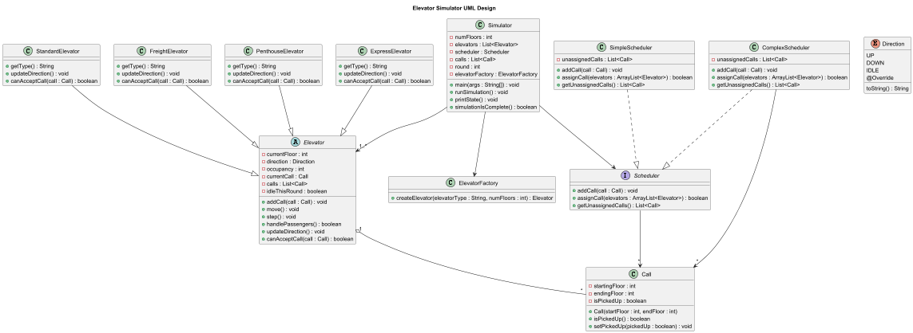

Hi, my name is Maximo Babun I am a junior studying Computer Science at the University of San Diego with a concentration in Data Science and AI, as well as a minor in management. Currently, I'm exploring software development, web technologies, and data science, aiming to create impactful and useful applications.
I am currently working as a lab assistant and tutor at USD, where I assist students learn computer science concepts such as data structures, algorithm analysis, and debugging. I am the current Vice-President for the Association of Computing Machinery (ACM) chapter at USD for the 25-26 year. As well as the Scribe for Theta Tau Lambda Epsilon chapter for 2025.
When not programming, you can find me staying active around San Diego. I love playing soccer with my friends, going to the beach to surf, or going on hikes.
The birthday paradox is the counterintuitive idea that the probability of at least 2 people having the same birthday in a group of 23, is 50%.
This project helps us simulate and visualize the Birthday Paradox by running a series of experiments to test the probability of shared birthdays in groups of different sizes. The program runs multiple trials for each group size and calculates the percentage of trials where 2 or more people had the same birthday. The results are shown in a clear table format, showing group size and percentage.
In this project my primary contributions where in the Birthday and the Trial class. I worked on getting Birthday to generate random valid birthdays and on optimizing the birthday comparison logic to accurately check for duplicated birthdays. I also contributed to the writing of unit tests to ensure accuracy and reliability. Tested Birthday with date generation and edge cases, also Trial and Experiment with correctly identifying duplicates and handling varying group sizes.
In this project I practiced object-oriented programming using clean code principles like single responsibility. I deepend my understanding of random generation and data validating. Gained experience writing test and mocking objects using Mockito. This project provided experience with clean code theory and on how to write robust programs.
This Elevator Simulator project helps visualize the workings of an elevator system responding to a list of calls.
The Elevator Simulator project is a simulation that models the operation of various types of elevators a building. It simulates how different elevator models like standard, freight, penthouse, and express, respond to real-time calls from different floors. The simulator runs in rounds, where elevators move one floor at a time and stop when picking up or dropping off passengers. When idle, elevators return to the ground floor and wait for new calls. This project demonstrates core object-oriented design principles and also provides a user-friendly way to visualize and understand elevators and its scheduling.
The project had as requirements to display the elevator state throughout the simulation. It has to process a file containing calls to elevators, assigning at most one call per round. Each type of elevator has its own type of restrictions. For example, the freight elevator could only contain one person at a time. There is also different types of scheduling, there is standard which looks for the first elevator to assign to. And there is complex that looks for the elevator that can service the call the fastest.
The project design takes into account the OOP pillars and makes sure to follow the SOLID principles helping the code stay flexible and maintainable. There is an abstract Elevator class as well as a Scheduler interface that encapsulate common attributes of its children. The elevators extend the abstract class to override and implement certain methods. As well, the schedulers implement the scheduler interface to give the methods functionality. This design also includes an elevator factory that helps stay clean and leaves the code open for extention. The abstraction in the project allows for better readability and helps focus on more essential features.
In this project, my primary contribution was implementing the scheduler and the simulator. I developed the logic for both the simple and complex schedulers to ensure calls are properly assigned to the most appropriate elevator based on the call. Additionally, I implemented the Simulator to manage simulation rounds, process elevator movements, and print the system state. Apart from implementing, I also participated in the ideation of the elevator classes as well as their functionality. Through this project, I learned to apply object-oriented and SOLID principles in order to build more maintainable code. I also saw how test-driven development can help catch issues early and help with code quality.
The Valet Parking Simulator models the real world challenge of efficiently assigning arriving cars of varying sizes and priorities to limited parking spots. In a mixed size lot, small vehicles occupy the smallest available spots, VIPs receive priority spaces, and EVs park at charger equipped stalls while minimizing driver walking distance.
This project automates the entire parking process. It reads arrival and departure commands from three interchangeable input sources: console prompts, random generation, or a CSV file. Each command is parsed into a Move object, and a configurable assignment strategy selects the best ParkingSpot. The lot layout itself loads from a CSV so you can model any combination of spot sizes, EV chargers, and VIP reserves. After processing all moves, the simulator displays a status report showing which spots are free or occupied.
My primary contributions centered on developing the Simulator class and building the InputTechnique implementations. I designed and implemented the console-based UserInput, the RandomInput generator, and the FileInput CSV reader, then integrated them into the Simulator’s orchestration loop. I also collaborated on wiring in the MoveParser and VehicleFactory so that raw commands seamlessly become typed Vehicle objects, and ensured the core loop correctly drives Valet and ParkingLot interactions.
Through this project I deepened my understanding of object oriented design, applying SOLID principles, the Strategy and Factory patterns, and clear SRP. I gained hands on experience with console and file IO parsing, writing robust unit tests for I O heavy classes, and controlling an integrated system. This work sharpened my skills in designing extensible and maintainable software.